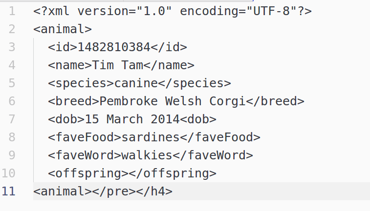

Your browser doesn't support the features required by impress.js, so you are presented with a simplified version of this presentation.
For the best experience please use the latest Chrome, Safari or Firefox browser.
Treasure Trove
Building simple tools with APIs
Kathy Reid BA/BSc MBA
President, Linux Australia

@KathyReid on GitHub, Twitter, IRC, Slack etc

President, Linux Australia
Session outline
Some technical content, but not very techie
Recap of how HTTP protocol works
What ReST is and how it works
How APIs work and how to use them to build tools
Treasure! Yarr!
Learning objectives
Understand the basics of the HTTP protocol
Understand the concept of ReST
Understand key terminology surrounding APIs
Understand key steps to planning and developing simple tools based on APIs
Have a better understanding of where to go next for help on your API journey
What tools are you thinking of building?
Recap of how HTTP works
What's a client and what's a server?
The request and response life cycle
Let's try it!!!!!!111!!!!
Representational State Transfer (ReSTful)
Everything is a resource
We can take actions on resources, if we are authorised to do so
We can act on a single resource without impacting the overall system
| Verb |
Objective |
Usage |
|
GET
|
retrieve data from resource
|
links
|
|
POST
|
create new items in resource
|
forms
|
|
PUT
|
replace existing items in resource
|
forms
|
|
PATCH
|
update existing items in resource
|
forms
|
|
DELETE
|
delete existing items in resource
|
forms
|
More on ReST
Is a type of architecture
Way of abstracting data
Hides the underlying complexity of the system
Way of leveraging multiple data sets for new and useful tools
Building tools on top of existing platfroms - ie Twitter, Xero etc
API keys
Used to identify the source of an API request
Can be paid or free
Used to provide different levels of access
Used to do rate limiting
Rate Limiting
A method of restricting the volume of API requests that are able to be sent
Mechanism to stop the server from being overloaded
Useful tools
Postman - https://www.getpostman.com/
Insomnia - https://insomnia.rest
Hurlit - https://www.hurl.it/
HTTP Requester https://addons.mozilla.org/En-us/firefox/addon/httprequester/
What problem are you trying to solve?
Before you start building your tool, it's a good idea to have a think about what problem you're trying to solve. There's some good techniques to approach this - such as user stories, wireframing, or something as simple as sketching out the flow of how you want tool to work.
Common formats for sending requests to APIs
api.company.com/object/id
api.company.com/book/3889
api.twitter.com/people/743212
api.company.com/?q=myQueryTerm&aparameter=value¶meter2=value2
Understanding data structures
Often you'll need to use more than one API to build your tool - different APIs return data in different ways - some return XML, some return JSON, so you need to learn skills in dealing with both of these data types.
JSON
{
"id:": 1482810384,
"name": "Tim Tam",
"species": "canine",
"breed": "Pembroke Welsh Corgi",
"dob": "15 March 2014",
"faveFood": "sardines",
"faveWord": "walkies",
"offspring": null
}
XML

Treasure Hunt!
Deakin University opened in Geelong in the 1970s. Who was the first Vice Chancellor? What was their full name? What was their discipline? What was unusual about their approach to this discipline?
Breaking down the query to the TROVE API
http://api.trove.nla.gov.au/result?q=geelong AND deakin university&zone=newspaper&l-decade=197&encoding=json&key=vitbcjb0reu355og&sortby=relevance
Next Steps
You will need some basic coding skills, or to partner with someone who has developer skills
Try a hackathon like GovHack, or run your own hackathon